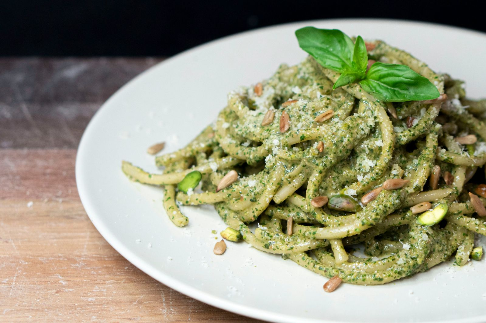

I'm in the mood for...
Mexican
Italian
Indian
Japanese
Irish
Moroccan
Spanish
Spice
Low Spice
Batch cooking
A quick meal
Potatoes
Rice
Tomatoes
Wheat
Soup
...a surprise!
Chana Masala
45 Mins
Recipe
Gazpacho
15 Mins
Recipe
Paella
90 Mins
Recipe

Pesto Pasta
20 Mins
Recipe
Pizza
18 Mins
Recipe
Potato Stew
30 Mins
Recipe
Ramen
25 Mins
Recipe
Sushi
50 Mins
Recipe
Sweet Potato and Lentil Soup
50 Mins
Recipe
Vegetable and Bean Tagine
85 Mins
Recipe
Dal Tadka
20 Mins
Recipe
Picadillo
30 Mins
Recipe
Tofu Enchiladas
40 Mins
Recipe
Vegan Sunday Roast
55 Mins
Recipe